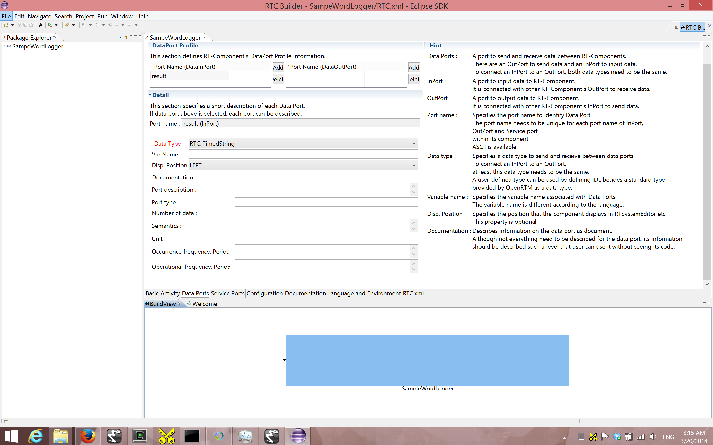
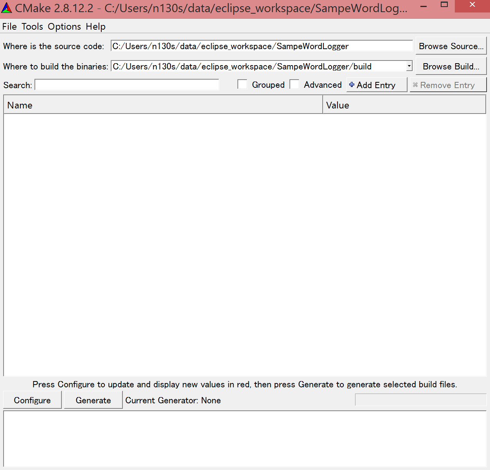

(RTC 作成 1) 音声キーワードロガー RTC の開発
Contents
1 Introduction¶
1.1 このページで体験すること¶
- OpenHRI の RTC と接続することで，音声認識されたキーワードのログを取得し，時刻とともにファイルに保存する SampleWordLogger RTC の開発
2 RTC の仕様 (I/O, Configuration)¶
これから作成するコンポーネントを SampleWordLogger RTC と呼ぶことにします．
このコンポーネントは TimedString 型の入力ポート (InPort) を持ちます．今回はログをファイルへ出力するのみとし，`RTC` として出力ポート (OutPort) は持たないｋとにします．`InPort` 名を result とします．
ログファイルの場所は今回はハードコードします (お好みに変えて下さい)．
上から RTC の仕様を次のようにまとめます．
| Component Name | SampleWordLogger |
|---|---|
| InPort | |
| Port Name | result |
| Data Type | TimedString |
| OutPort | |
| Port Name | (None) |
| Data Type | (None) |
| Configuration | |
| Parameter Name | (None) |
| Data Type | (None) |
| Values | (None) |
3 RTCBuilder のインストール，起動¶
本章では Eclipse ベースのツール OpenRTP (Open RT Platform) に同梱される RTBuilder を利用するので，[2]からダウンロード・インストールして下さい．
新規ワークスペースを指定して Eclipse を起動すると，以下のような Welcome ページが表示されます (画像引用元)．

Welcome ページはいまは必要ないので左上の「×」ボタンを押して閉じてください (画像引用元)．

右上の「Open Perspective」ボタンを押下し，プルダウンの「Other…」 ボタンを押下します(画像引用元)．

RTC Builder を選択することで，RTCBuilder が起動します．
4 How to make RTC¶
4.1 新規プロジェクトの作成¶
SampleWordLogger コンポーネントを作成するために，`RTCBuilder` で新規プロジェクトを 作成する必要が有ります．画面上部のメニューから[ファイル]－[新規]－ [プロジェクト]を選択します．

表示された ｢新規プロジェクト｣ 画面において，｢その他｣－｢RTCビルダ｣ を選択し，｢次へ｣ をクリックします．｢プロジェクト名｣欄に作成するプロジェクト名 (ここでは SampleWordLogger) を入力して｢終了｣をクリックします．

指定した名称のプロジェクトが生成され，パッケージエクスプローラ内に追加されます． 生成したプロジェクト内には，デフォルト値が設定された RTC プロファ イル XML(RTC.xml) が自動的に生成されるのがわかると思います．

RTC.xml が生成された時点で，このプロジェクトに関連付けられているワークスペースとして RTCBuilder のエディタが開くはずです．もし開かない場合は，ツールバーの｢Open New RtcBuilder Editor｣ボタンを押下するか，メニューバーの [file]-[Open New Builder Editor] を選択します．

(画像引用元)．

4.2 SampleWordLogger コンポーネントの雛型の生成¶
SampleWordLogger RTC の雛型の生成は，`OpenRTP` に同梱の RTCBuilder を用いて行います．
4.2.1 プロファイル情報入力とコードの生成¶
まず，いちばん左の「基本」タブを選択し，基本情報を入力します．先ほ ど決めた SampleWordLogger コンポーネントの仕様(名前)の他に，概要やバージョン等を入力してください．ラベルが赤字の項目は必須項目です．その他はデフォルトで構いません．

次に，「アクティビティ」タブを選択し，使用するアクションコールバッ クを指定します． SampleWordLogger RTC では，onActivated(), onDeactivated(), onExecute() コールバックを使用します．下図のように (1) の onAtivated をクリック後に (2) のラジオボタンにて “on” にチェックを入れます．onDeactivated, onExecute についても同様の手順を行います(画像引用元)．

さらに，”Data Ports” タブを選択し，データポートの情報を入力します． 先ほど決めた仕様を元に以下のように入力します．なお，変数名や表示位置はオプションで，そのままで結構です．
次に，「言語・環境」タブを選択し，プログラミング言語を選択します． ここでは，`C++` を選択します．なお，言語・環境はデフォルト等が 設定されておらず，指定し忘れるとコード生成時にエラーになりますので， 必ず言語の指定を行うようにしてください．
また，`C++` の場合デフォルトでは CMake を利用してビルドすることになって いますが，旧式の VC のプロジェクトやソリューションを直接 RTCBuilder が 生成する方法を利用したい場合は Use old build environment を チェックしてください．
最後に，「基本」タブにある”コード生成”ボタンをクリックし，コンポー ネントの雛型を生成します．
※ 生成されるコード群は，eclipse 起動時に指定したワークスペースフォルダの中に生成されます．現在のワークスペースは，「ファイル(F)」 > 「ワークスペースの切り替え(W)...」で確認することができます．
4.3 仮ビルド¶
さて，ここまでで SampleWordLogger コンポーネントのソースコードが生成されました． 処理の中身は実装されていないので，`InPort` に他の RTC を接続しても何も出力されませんが，生成直後のソースコードだけでもコンパイルおよび実行はできます．
※サービスポートとプロバイダを持つコンポーネントの場合，実装を行わないとビルドが通らないものもあります．
では，まず CMake を利用してビルド環境の Configure を行います．Linuxで あれば，SampleWordLogger コンポーネントのソースが生成されたディレクトリで:
$ cmake .
$ make
とすれば，Configureおよびビルドが完了するはずです．`Windows` の場合は GUI を利用して Configure してみます． スタートメニューなどから CMake (cmake-gui) を起動します(画像引用元)．

画面上部に以下のようなテキストボックスがありますので，それぞれソースコードの場所(CMakeList.txt が有る場所) と，ビルドディレクトリを指定します．
Where is the soruce code ^ Where to build the binaries
ソースコードの場所は SampleWordLogger コンポーネントのソースが生成された場所で CMakeList.txt が存在するディレクトリです．デフォルトでは <ワークス ペースディレクトリ>/SampleWordLogger になります．
また，ビルドディレクトリとは，ビルドするためのプロジェクトファイルやオブジェクトファイル，バイナリを格納する場所のことです．場所は任意ですが，この場合 <ワークスペースディレクトリ>/SampleWordLogger/build のように分かりやすい名前をつけた SampleWordLogger のサブディレクトリを指定することをお勧めします．
指定したら，下の Configure ボタンを押します．すると下図のようなダイアログが表示されますので，生成したいプロジェクトの種類を指定します．今回は Visual Studio 10 とします(画像引用元)．

ダイアログで Finish を押すと Configure が始まります．問題がなければ下部のログウインドウに Configuring done と出力されますので，続けて Generate ボタンを押します．Generating done と出ればプロジェクトファイル・ソリューションファイル等の出力が完了します．
なお，`CMake` は Configure の段階でキャッシュファイルを生成しますので，トラブルなどで設定を変更したり環境を変更した場合は [File]-[Delete Cache] でキャッシュを削除して Configure からやり直してください．
次に先ほど指定した build ディレクトリの中の SampleWordLogger.sln をダブルクリックして Visual Studio 2010 を起動します．
起動後，ソリューションエクスプローラーの ALL_BUILD を右クリックしビルドを選択してビルドします．特に問題がなければ正常にビルドが終了します．

ここで VC++ 2010 は閉じても構いません．
4.4 ヘッダ，ソースの編集¶
4.4.1 アクティビティ処理の実装¶
SampleWordLogger RTC では，InPort から語を受け取った時刻とその語をファイルストリームに流します．
onActivated(), onExecute(), onDeactivated() での処理内容を下図に示します (編集用の図ファイル 必要であれば編集権を同ページ内から申請して下さい)．
4.4.2 .cpp ファイル編集¶
下記のように，`onActivated()`, onDeactivated(), onExecute() を実装します．:
RTC::ReturnCode_t SampleWordLogger::onActivated(RTC::UniqueId ec_id)
{
// open file
std::cerr << "Opening Log File ... " << m_SampleWordLoggerFileName << std::endl;
std::locale::global(std::locale(""));
m_SampleWordFileStream.open(m_SampleWordLoggerFileName);
if(!m_SampleWordFileStream) {
std::cerr<<"Error opening file"<< std::endl;
return RTC::RTC_ERROR;
}
m_SampleWordFileStream.imbue(std::locale(m_SampleWordFileStream.getloc(),new std::codecvt_utf8_utf16<wchar_t>));
return RTC::RTC_OK;
}
RTC::ReturnCode_t SampleWordLogger::onDeactivated(RTC::UniqueId ec_id)
{
// close file
m_SampleWordFileStream.close();
return RTC::RTC_OK;
}
RTC::ReturnCode_t SampleWordLogger::onExecute(RTC::UniqueId ec_id)
{
// Check if the inbound data is new.
if (m_resultIn.isNew()) {
// Read in from InPort.
m_resultIn.read();
//
SYSTEMTIME systime;
GetLocalTime(&systime);
static char sDate[128];
sprintf(sDate, "%04d/%02d/%02d %02d:%02d:%02d", systime.wYear, systime.wMonth, systime.wDay, systime.wHour, systime.wMinute, systime.wSecond);
std::cerr << "Writing... " << std::endl;
std::cerr << " " << sDate << std::endl;
m_SampleWordFileStream << sDate << " ";
HRESULT hr = S_OK;
IXmlReader *pReader = NULL;
XmlNodeType nodeType;
IStream *pStream;
CreateStreamOnHGlobal(NULL, TRUE, &pStream);
LARGE_INTEGER liBeggining = { 0 };
pStream->Seek(liBeggining, STREAM_SEEK_SET, NULL);
ULONG ulBytesWritten = 0;
ULONG ulSize = 0;
ULARGE_INTEGER uliSize = { 0 };
pStream -> SetSize (uliSize);
ulSize = (ULONG)strlen(m_result.data);
pStream->Write((void const*)m_result.data,(ULONG)ulSize, (ULONG*)&ulBytesWritten);
pStream->Seek(liBeggining, STREAM_SEEK_SET, NULL);
if (FAILED(hr = CreateXmlReader(__uuidof(IXmlReader), (void**) &pReader, NULL)))
{
wprintf(L"Error creating xml reader, error is %08.8lx", hr);
return RTC::RTC_ERROR;
}
if (FAILED(hr = pReader->SetProperty(XmlReaderProperty_DtdProcessing, DtdProcessing_Prohibit)))
{
wprintf(L"Error setting XmlReaderProperty_DtdProcessing, error is %08.8lx", hr);
return RTC::RTC_ERROR;
}
if (FAILED(hr = pReader->SetInput(pStream)))
{
wprintf(L"Error setting input for reader, error is %08.8lx", hr);
return RTC::RTC_ERROR;
}
bool firstText = true;
while (S_OK == (hr = pReader->Read(&nodeType)))
{
LPCWSTR pwszPrefix = NULL;
UINT cwchPrefix = 0;
LPCWSTR pwszLocalName = NULL;
LPCWSTR pwszValue = NULL;
switch (nodeType)
{
case XmlNodeType_Element:
if (FAILED(hr = pReader->GetPrefix(&pwszPrefix, &cwchPrefix)))
{
wprintf(L"Error getting prefix, error is %08.8lx", hr);
return RTC::RTC_ERROR;
}
if (FAILED(hr = pReader->GetLocalName(&pwszLocalName, NULL)))
{
wprintf(L"Error getting local name, error is %08.8lx", hr);
return RTC::RTC_ERROR;
}
if (cwchPrefix > 0)
wprintf(L"Element: %s:%s\n", pwszPrefix, pwszLocalName);
else
wprintf(L"Element: %s\n", pwszLocalName);
// Attributes
const WCHAR* pwszPrefix;
const WCHAR* pwszLocalName;
const WCHAR* pwszValue;
hr = pReader->MoveToFirstAttribute();
while (TRUE)
{
if (!pReader->IsDefault())
{
UINT cwchPrefix;
if (FAILED(hr = pReader->GetPrefix(&pwszPrefix, &cwchPrefix)))
{
wprintf(L"Error getting prefix, error is %08.8lx", hr);
return RTC::RTC_ERROR;
}
if (FAILED(hr = pReader->GetLocalName(&pwszLocalName, NULL)))
{
wprintf(L"Error getting local name, error is %08.8lx", hr);
return RTC::RTC_ERROR;
}
if (FAILED(hr = pReader->GetValue(&pwszValue, NULL)))
{
wprintf(L"Error getting value, error is %08.8lx", hr);
return RTC::RTC_ERROR;
}
if (cwchPrefix > 0)
wprintf(L"Attr: %s:%s=\"%s\" \n", pwszPrefix, pwszLocalName, pwszValue);
else
wprintf(L"Attr: %s=\"%s\" \n", pwszLocalName, pwszValue);
if ( firstText && wcscmp(pwszLocalName, L"text") == 0 ) {
m_SampleWordFileStream << pwszValue << std::endl;
firstText = false;
}
//m_SampleWordFileStream << " " << pwszLocalName << ":" << pwszValue << std::endl;
}
if (S_OK != pReader->MoveToNextAttribute())
break;
}
if (pReader->IsEmptyElement() )
wprintf(L" (empty)");
break;
case XmlNodeType_EndElement:
if (FAILED(hr = pReader->GetPrefix(&pwszPrefix, &cwchPrefix)))
{
wprintf(L"Error getting prefix, error is %08.8lx", hr);
return RTC::RTC_ERROR;
}
if (FAILED(hr = pReader->GetLocalName(&pwszLocalName, NULL)))
{
wprintf(L"Error getting local name, error is %08.8lx", hr);
return RTC::RTC_ERROR;
}
if (cwchPrefix > 0)
wprintf(L"End Element: %s:%s\n", pwszPrefix, pwszLocalName);
else
wprintf(L"End Element: %s\n", pwszLocalName);
break;
}
}
//
}
return RTC::RTC_OK;
}
4.5 CMakeList.txt の編集¶
この RTC ではログファイル生成のために xmllib を使用しています (実際のログのフォーマットは xml ではありませんが) ので，`RTCBuilder` が生成した CMakeLists.txt にその旨を追記します．
適当なエディタ (VC++ 2010, Emacs 等) 上で，`SampleWordLogger/CMakeLists.txt` を開いて下さい．:
add_subdirectory(src)
とあり，`src` フォルダの情報は移譲されていることが分かるので，`SampleWordLogger/src/CMakeLists.txt` を開きます．このファイル中を例えば以下の様に変更します:
+ # Add xmllibs that's necessary for this SampleWordLogger project
+ set(REQ_LIBS xmllite.dll)
add_library(${PROJECT_NAME} ${LIB_TYPE} ${comp_srcs}
${comp_headers} ${ALL_IDL_SRCS})
set_target_properties(${PROJECT_NAME} PROPERTIES PREFIX "")
set_source_files_properties(${ALL_IDL_SRCS} PROPERTIES GENERATED 1)
add_dependencies(${PROJECT_NAME} ALL_IDL_TGT)
- target_link_libraries(${PROJECT_NAME} ${OPENRTM_LIBRARIES})
+ target_link_libraries(${PROJECT_NAME} ${OPENRTM_LIBRARIES} ${REQ_LIBS})
add_executable(${PROJECT_NAME}Comp ${standalone_srcs}
${comp_srcs} ${comp_headers} ${ALL_IDL_SRCS})
- target_link_libraries(${PROJECT_NAME}Comp ${OPENRTM_LIBRARIES})
+ target_link_libraries(${PROJECT_NAME}Comp ${OPENRTM_LIBRARIES} ${REQ_LIBS})
4.6 VC++ によるビルド¶
Visual C++ 2010 に戻ります．もし既に閉じていれば，再度 SampleWordLogger.sln ファイルをダブルクリックし，Visual C++ 2010 を起動します．Visual C++ 2010 の起動後，下図のようにし，コンポーネントのビルドを行います(画像引用元)．

Visual C++ 2010 のコンソールにエラーが起きたと表示されなければ，以上で RTC 作成が終了です．
5 実行方法¶
以下，特に指定ない限り，配布 USB のホームディレクトリに居ることを前提とします．
では実行してみましょう． SampleWordLogger は単体だと何も行わないので，先に紹介された MotionByVoiceDemo と組合せて発話を記録してみましょう．
上記二つのフォルダからそれぞれに格納される RTC を呼ぶための .bat ファイルを既に ./demo/MotionByVoiceLoggerDemo として用意してあります．
MotionByVoiceLoggerDemo
- ./demo/MotionByVoiceLoggerDemo から “0_StartDemo.bat”，”1_ConnectRTC.bat”，”2_ActivateRTC.bat” の順に，下記リンクをクリックして実行．クリックして動作していなそうな場合，Explorer で当該フォルダを開いてそれぞれ実行．
- ./demo/MotionByVoiceLoggerDemo/0_StartDemo.bat |
- ./demo/MotionByVoiceLoggerDemo/1_ConnectRTC.bat |
- ./demo/MotionByVoiceLoggerDemo/2_ActivateRTC.bat

- MotionByVoiceDemo のチュートリアル に従い，発話デモを実行．
- “3_DeactivateRTC.bat”, “4_DisconnectRTC.bat”，”5_DemoExit.bat” の順に実行し，RT システムを停止．
- ./demo/MotionByVoiceLoggerDemo/3_DeactivateRTC.bat |
- ./demo/MotionByVoiceLoggerDemo/4_DisconnectRTC.bat |
- ./demo/MotionByVoiceLoggerDemo/5_DemoExit.bat
./demo/SampleWordLogger/build/Debug/SampleWord.log をテキストエディタで開くと，下の例のように，時刻と発話内容が記録されている．
2014/03/13 08:56:31 左 さげて 2014/03/13 08:56:44 右 あげて 2014/03/13 08:57:08 左 よろしく 2014/03/13 08:58:23 左 あげて 2014/03/13 08:58:39 左 あげない